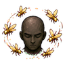
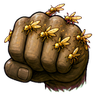
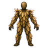
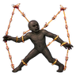
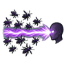

Low-level hive mind C
C-rank passive. The hive whispers skill and warning to you.
Technique trees › Clans and bloodlines
10 techniques · Clan tab
Unlocks for pawns with the WN_BugControl gene.

C-rank passive. The hive whispers skill and warning to you.
D-rank. Warn the hive: you and nearby allies are on guard.
| Rank | Chakra | Cooldown | Class level |
|---|---|---|---|
| D | 10 | 15 s | 2 |

D-rank passive. Every blow carries the hive's strength.

C-rank passive. The hive helps you shrug off poison and fatigue.
C-rank passive. The hive steadies your mind.
C-rank. See through the eyes of the swarm: the fog lifts far around you.
| Rank | Chakra | Cooldown | Class level |
|---|---|---|---|
| C | 20 | 25 s | 5 |

B-rank. Insects pull at one enemy's limbs: they stumble and can barely move.
| Rank | Chakra | Cooldown | Class level |
|---|---|---|---|
| B | 35 | 25 s | 9 |
B-rank. Become the hive's heart: every ally around you fights better for a while.
| Rank | Chakra | Cooldown | Class level |
|---|---|---|---|
| B | 35 | 50 s | 9 |

A-rank. Channel chakra through the swarm into one enemy far away.
| Rank | Chakra | Cooldown | Class level |
|---|---|---|---|
| A | 55 | 50 s | 13 |
A-rank passive. A full mental link with the hive: sharper in every way.